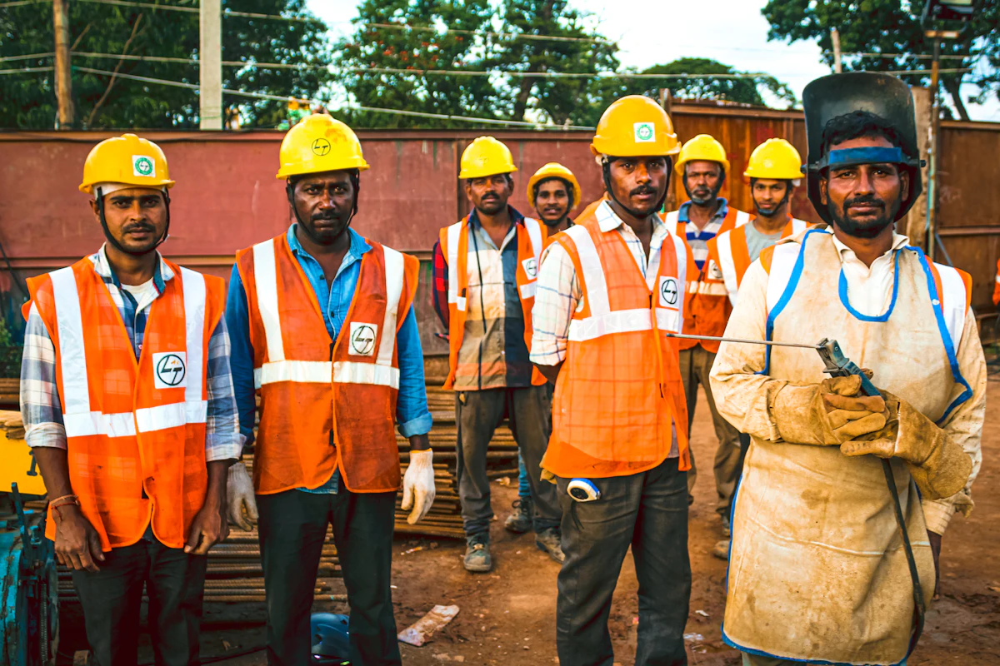

L'entreprise
Une entreprise normande du nettoyage en hauteur.
CleanVitreService, établie à Bolbec, nettoie les vitres, les façades et les surfaces que l'on n'atteint pas simplement.
Notre métier
Le nettoyage n'est pas le problème. L'accès l'est.
Nettoyer une vitre est un geste simple. Atteindre cette vitre lorsqu'elle se trouve au vingtième niveau d'un mur-rideau, au-dessus d'une verrière ou en surplomb d'une rue circulée est un problème technique à part entière.
C'est ce problème que nous traitons. Notre activité consiste à déterminer comment accéder à une surface en hauteur — proprement, en sécurité, sans immobiliser le bâtiment et sans endommager le support — puis à réaliser l'intervention.
Pour cela, nous disposons de quatre moyens d'accès complémentaires : le matériel conventionnel de laveur de vitres, la perche télescopique, les travaux sur cordes et le nettoyage par drone. Aucun n'est supérieur aux autres. Chacun répond à une famille de configurations, et c'est le bâtiment qui tranche.
Cette polyvalence est notre choix de départ. Un prestataire qui ne maîtrise qu'un seul moyen d'accès doit nécessairement convaincre que ce moyen convient à votre bâtiment. Nous n'avons pas ce biais.

Notre manière de travailler
Quatre principes, tenus.
Ce ne sont pas des valeurs d'affichage : ce sont des règles de fonctionnement qui déterminent nos réponses, y compris quand elles nous font perdre une affaire.
01 — Le bâtiment décide
La méthode est choisie après analyse du bâtiment, jamais avant. Notre parc matériel ne dicte pas notre recommandation.
02 — Dire non quand c'est non
Si une méthode n'est pas adaptée, nous le disons. Si aucune ne l'est, nous le disons aussi, et nous expliquons pourquoi.
03 — Pas de chiffres inventés
Aucune statistique, aucun taux de satisfaction, aucune référence client que nous ne pourrions documenter n'apparaît sur ce site.
04 — La sécurité avant le planning
Une intervention peut être reportée pour des raisons météorologiques ou techniques. Ce n'est pas négociable.
Nos moyens
Ce dont nous disposons — et ce dont nous ne disposons pas.
La seconde liste est aussi importante que la première. Elle évite les malentendus dès le premier échange.
Nos moyens d'intervention
- Drones professionnels de nettoyage, pilotés depuis le sol
- Personnels formés au travail en hauteur et à l'accès par cordes
- Matériel de nettoyage professionnel adapté aux supports traités
Ce que nous ne possédons pas
- Robots de nettoyage autonomes
- Grues de chantier ou grues à tour
- Tout équipement non mentionné dans la liste ci-contre
Nous le précisons parce que ce secteur communique parfois sur des équipements qu'il ne détient pas. Si une prestation exige un moyen dont nous ne disposons pas, nous vous le dirons plutôt que de l'improviser.
L'entreprise en clair
Les faits, et rien de plus.
Nous préférons une page courte et exacte à une page longue et flatteuse.
- Dénomination
- CleanVitreService
- Dirigeant
- Noah Lefebvre
- Statut
- Entreprise individuelle — micro-entreprise
- Siège
- 4 ruelle de l'Hôtel de Ville, 76210 Bolbec
- SIREN
- 101 837 474
- SIRET
- 101 837 474 00010
- Zone
- 50 km autour de Bolbec, Normandie, France selon projet
Déroulement
De votre premier appel à la remise du chantier.
Chaque projet suit le même cadre : comprendre le bâtiment avant de choisir la méthode. C'est cette étape qui détermine la faisabilité, le délai et le coût.
Premier contact
Vous nous présentez votre bâtiment et votre besoin, par téléphone, par e-mail ou via le formulaire de devis. Quelques photographies suffisent souvent à cadrer la demande.
Analyse du bâtiment et des contraintes
Nous examinons la nature des surfaces, la hauteur, les accès, l'environnement immédiat, la présence de public et les contraintes d'exploitation du site.
Choix de la méthode d'intervention
Matériel conventionnel, perche télescopique, travaux sur cordes ou drone : nous retenons la méthode techniquement adaptée, parfois une combinaison, et vous remettons une proposition détaillée.
Intervention et nettoyage
L'intervention est planifiée en fonction de votre activité. Les surfaces sont nettoyées, puis contrôlées avant la remise du chantier.
FAQ · À propos
Questions sur l'entreprise
Qui est derrière CleanVitreService ?
L'entreprise est dirigée par Noah Lefebvre. Elle est établie à Bolbec, en Seine-Maritime, et exerce sous le statut de micro-entreprise.
Quelles sont vos assurances et qualifications ?
L'entreprise dispose d'une assurance de responsabilité civile professionnelle, et les interventions par drone comme les travaux en hauteur relèvent d'autorisations et de qualifications spécifiques.
Leurs intitulés exacts et leurs références ne sont pas publiés ici tant qu'ils n'ont pas été formellement vérifiés. Ils sont communiqués sur demande, notamment dans le cadre d'une consultation.
Combien de personnes composent l'équipe ?
Cette information n'est pas publiée. Le dimensionnement de l'équipe mobilisée pour votre intervention figure dans le devis.
Prendre contact
Parlons de votre bâtiment, pas de nous.
La meilleure façon de juger un prestataire technique reste de lui soumettre un cas concret. Décrivez-nous le vôtre.
- Téléphone
- 06 41 01 96 43
- cleanvitreservice@gmail.com
- Territoire
- Normandie · France entière